EDGE INCA GENERATORS AS COMPLEMENT TO CENTRALIZED DATACENTERS
INCA stands for INternet CApacity (storage, compute and network) and is today mainly delivered from out of large centralized datacenters, which were and still are fundamental for the further internet growth, but this is not enough; we believe they need to be complemented by quantum safe edge datacenters.

together we can deliver an decentralized internet capacity datacenter approach which is more:
- safe
- war proof (see what happened with Ukraine), we are much more decentralized.
- scalable (billions of users are possible)
- more bandwidth efficient (closer to where the users are)
- cost effective and green
- potentially carbon neutral
INCA = The Token fueling INternet CApacity Generation
INCA Farmers (Edge Datacenters) generate Internet Capacity (Storage, Compute and Network). The INCA Farmers are rewarded tokens for doing so, TFT or the local CHI is like a kwath for electricity but in this case it does represent internet capacity.
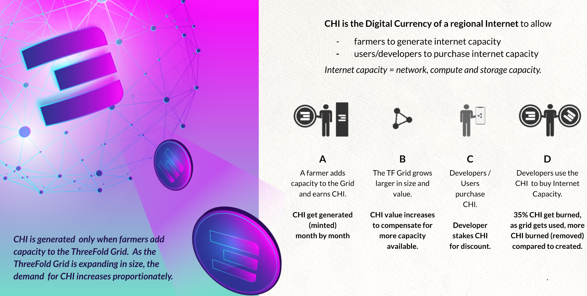
There are many drivers why CHI will be scarce per regional Internet, some more info further in this document.
INCA INVESTMENT BEST OF BOTH WORLDS
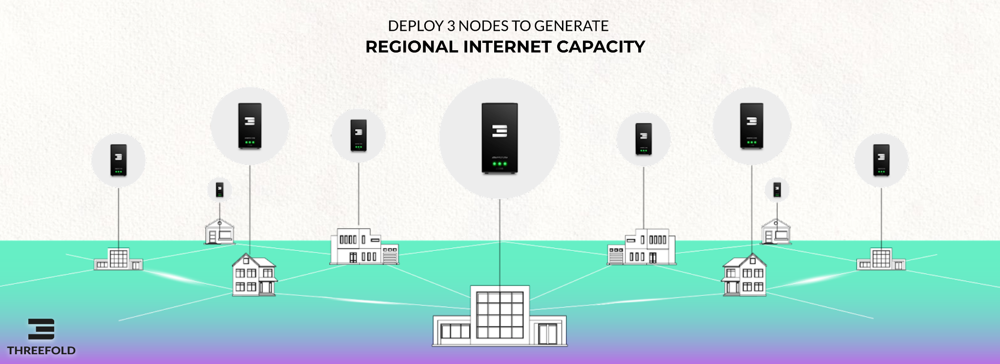
As an INCA investor I have the best of both worlds, I get a modern investment instrument which is protected by blockchain, real assets (edge datacenters) and legal documents as well as a known understood financial instrument called Sukuk.
This Investment Instrument INCA represents the digital gold of the future = Internet Capacity and is backed by the technology of an exciting technology company called ThreeFold who has already a lot of capacity deployed in many countries.
THE INCA FARMER generates CHI or TFT and is super valuable
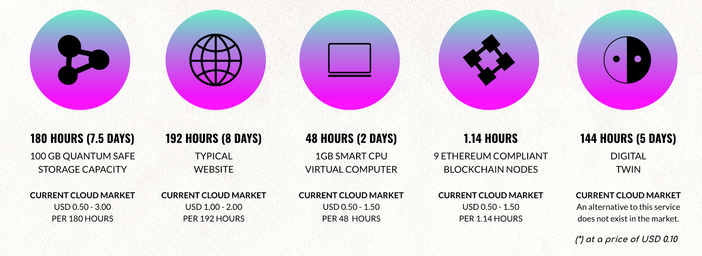
A CHI is a valuable token which has real utility and can be exchanged for USD and TFT which is the reserve currency for the full ecosystem. The TFT/CHI is needed for people to buy Internet Capacity as hosted on this network. This token system allows for a great economical model.
PLEASE DO NOTE: we can deploy INCA projects in such a way that the customers (users of capacity) and or suppliers have nothing to do with Digital currencies. We can park all of this in an SPV which will deal with the fiat currency to token and back conversion.
Compare to Electricity Generation

-
TFT and CHI are the Internet Energy Token which represents Internet Capacity (Storage, Compute, Network) A TFT/CHI can be thought of like kwatth in electricity generation. CHI is generated by ThreeFold Farmers.
-
Investors can buy an INCA (INternet CApacity) Certificate which is a digital certificate. An INCA is a certificate, which allows the owner to convert an INCA Certificate into a certain amount of TFT or CHI at a certain time from predefined parties (farmers).
| Energy Solar Panel Production | ThreeFold Internet Capacity Production |
|---|---|
| Unit of generation | = kwatth |
| Ownership Proof | = shares in special purpose vehicle |
| Liquidity | Low requires exit, or IPO |
| Security | Backed by all assets. |
| Utility | Electricity Energy |
| Expected ROI (per year) | 5-12% IRR |
QUANTUM SAFE EDGE DATACENTER CONCEPT
ThreeFold has created super efficient INternet CApacity generation technology. This INternet CApacity is compute, storage and network capacity which is green, secure, sovereign and private. This capacity layer is compatible with +- all workloads which would otherwise run in a centralized datacenter.
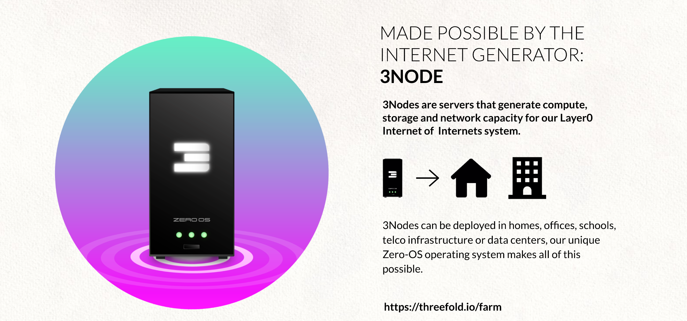
The 3Nodes are the efficient INCA generators and can be deployed in homes, offices, buildings, parking spots or deep down in basements or even vaults or bunkers. This allows for the creation of a super secure decentralized datacenter approach.
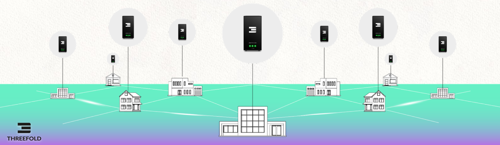
A node can be as small as a 1.000 USD cost box or as expensive as 50.000 USD per node.
The nodes can be connected over a multitude of networking technologies and even a combination, our technology is capable of looking for the shortest path in relation to connectivity on top of existing infrastructure. The network layer inside a Quantum Safe Virtual Datacenter is end2end encrypted and private. If somewhere an internet connectivity path is broken, the technology will look for alternative paths automatically, this happens without having to use Internet Routing protocols which might be too slow and possibly not secure enough.
Scalable INCA Super Node Approach
The Edge datacenter concept is able to create and deliver mainstream datacenter services from non datacenter locations, at the so called edge. However at the edge there might not be all the needed (technical) components to create and operate internet services equal to what can be done in the super nodes.
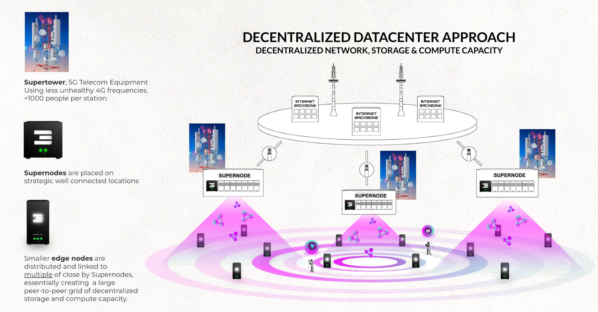
Quantum Safe Decentralized Datacenter Benefits
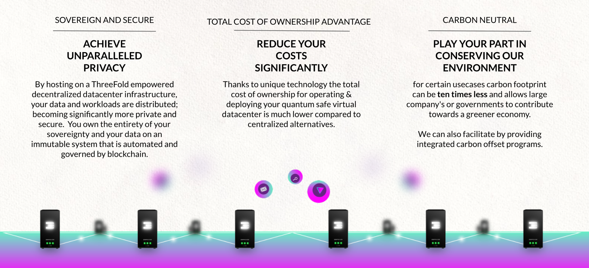
Quantum Safe Decentralized Datacenter Technology
More information in https://threefoldfoundation.github.io/books/technology/
There are 3 major parts to it
- Zero-OS = our own low level operating system providing compute capabilities
- Quantum Safe Storage System
- Planetary Network = an overlay end2end encrypted network layer
The Cyber Pandemic is a Reality, we need better solutions.
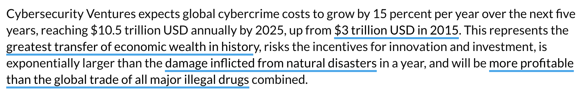
Countries have a hard time to defend themselves against cyber security threats, the main issue is that technology available might come from compromised sources in the first place. Where better to put backdoors than in the tools which should defend you? Lots of issues have never been intended but because of history we now end up with IT infrastructure which is incredibly hard to make secure.
EXISTING SOLUTIONS ARE TOO COMPLICATED AND OUTDATED A NEW APPROACH IS NEEDED.
See cyber security brief for more information.
The ThreeFold Decentralized Datacenter approach can scale to Billions of users

Each Regional Internet is created by a Genesis Farmer (a genesis farmer can be a local or federal government or tribe, but also a property development company, university or even an Enterprise) who will look for investors who will receive INCA tokens in return for their investment. The INCA Certificates are a regulated investment instrument also registered on the blockchain and are structured as Sukuk certificates.
Each Genesis Farmer and its investors will deploy 50 Validators for the regional Internet and will fund a liquidity pool, this is a pool for making exchange between TFT and CHI easy and fluid.
THE INCA CERTIFICATES
Investors in decentralized datacenter infrastructure can receive INCA certificates as proof of ownership and reward. These Certificates are valuable and can be made tradeable. We can also provide alternative investment mechanisms.

A Sukuk ("Sharia-compliant" bond) is an Islamic financial certificate that represents a portion of ownership in a portfolio of eligible existing or future assets. The INCA is technically created as a digital token (also called NFT) which represents value and is unique.
The INCA Certificates are transferable through blockchain technology.
Each INCA Certificate represents a certain amount of Internet Capacity value and is backed by guarantees.
Each INCA is linked to the following Certificate Properties
- The generator of the CHIs = the farmer who will convert INCA to CHI
- The conditions of this conversion (nr of CHI per INCA), from which date.
- The guarantees of this INCA e.g. the farmer uses their shares and assets as backing for the value of the INCA, so in case the INCA cannot be converted to the right amount of CHI at the right value the INCA owner has the option to convert into shares or demand FIAT currency.
All of this happens in an automated way by blockchain technology but can also be legally backed by contractual documents between the INCA Investor and the Farmer.
EXAMPLE INCA PROJECT: 90M USD EDGE DATACENTER DEPLOYMENT TANZANIA
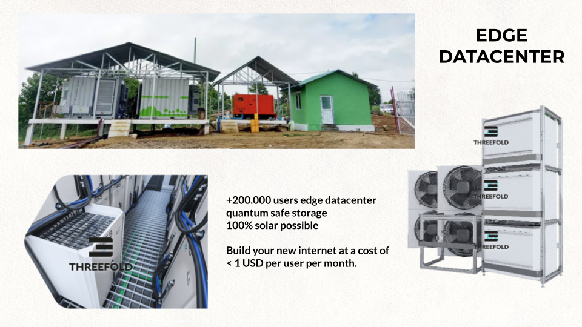
This project will deploy 30 edge datacenters. Each edge datacenter generates CHI Tokens (CHI represent energy) which represent compute, storage and network capacity (think about it like kilowatt/h in electricity power generation facilities).
The earlier in the life cycle of ThreeFold a farmer generates capacity the more ThreeFold Tokens will be created (farmed/mined). The investor of those datacenters has INCA Certificates to prove ownership and receives the CHI as they are being farmed over time.
An investment of 90m USD has the potential to return 450m USD or more, this is possible thanks to the unique structure of the ThreeFold grid and how we generate INternet CApacity.
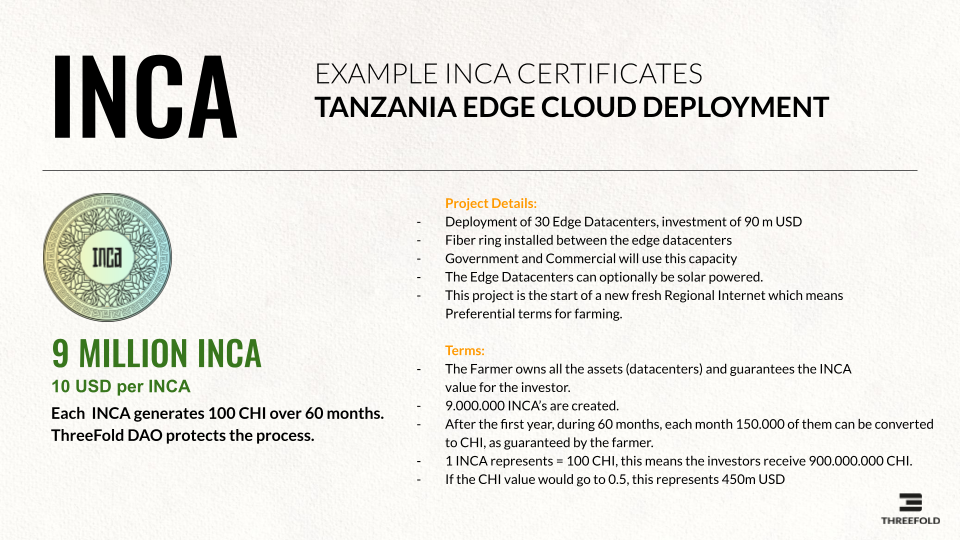
The ThreeFold Grid Is Usable
Not only this returns profit for the investor but as important is that the Internet Capacity generated is usable for many different use cases and provides prosperity for the country which gets their own Regional Internet.
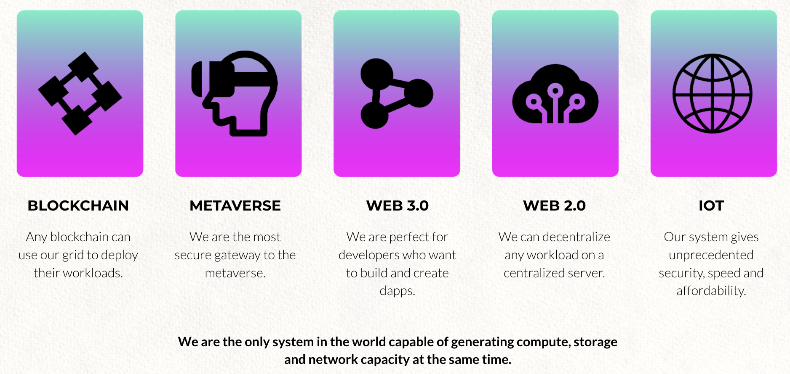
A regional Internet created by the genesis farmers and financially supported by the INCA investors is able to function on its own. The capacity created inside such a regional setup presents sovereign capacity carrying regional workloads without dependency on anything outside resulting in true independence and resilience for that region.
CHI SCARCITY AND LIFECYCLE
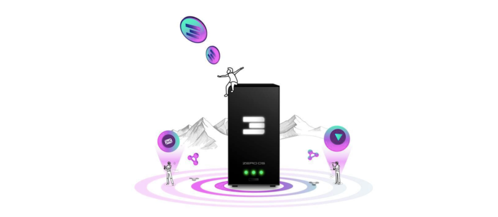
CHI is the energy token of the ThreeFold Internet. CHI is scarce and valuable.
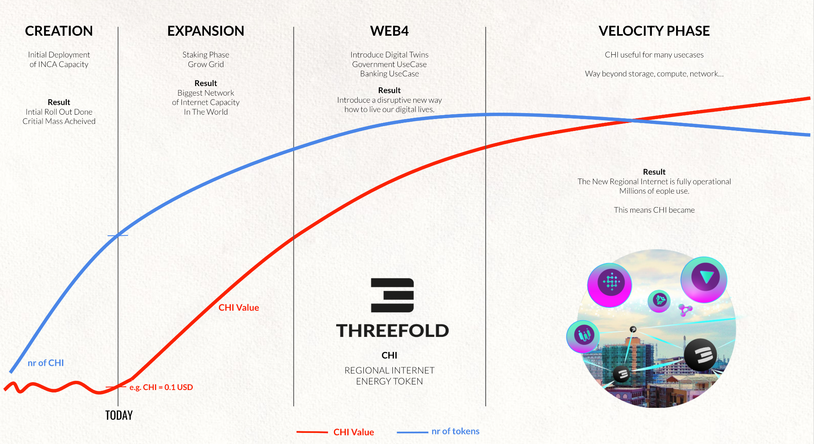
CHI Farmers who start at creation mode can farm upto 10x more CHI compared to someone who enters the ecosystem at the end of the expansion phase.
This is because the CHI farming reward is locked in at the point when the 3Node gets registered and this is in line with the CHI price at that stage. Each Regional internet starts with a CHI price of USD 0.1, the first deployments will be locked for a CHI farming reward at USD 0.1. If in the expansion phase the CHI goes to e.g. 0.5 USD it means that farmers at that stage will get 5x less reward for the same investment.
Creation Phase
- Initial farmers deploy enough capacity to make the TF Grid (Internet Capacity Network) large enough to support expansion by everyone.
- Initial farmers deploy the first 50 validators and have to stake Threefold Tokens for it and will also put initial liquidity in the Liquidity pool.
- All initial deployed capacity is certified and does not require staking. In this stage the CHI price will be rather low and fluctuate until the network is ready for expansion.
- The CHI generated are put into a liquidity pool of the regional internet, whoever needs CHI for Internet Capacity or for Staking in expansion mode can buy the CHI from the liquidity pool, this generates income for the early farmers and potential possibility of early liquidity (in FIAT currency e.g. USD).
Expansion
- New farmers will have to stake CHI to get rewards, the amount to stake is in line with the reward as well as certification level. Any home, government entity, university or commercial provider can deploy additional capacity to the grid by means of deploying 3Nodes.
- This requires a lot of CHI to be locked into the network, people will have to buy these CHI which means liquidity is being created.
- The network now grows autonomous to a much larger scale as compared to the creation mode.
Web 4
- The picture is probably misleading, Web4 and Expansion goes in parallel.
- Web4 expansion means use cases are being deployed on the grid which require buying CHI, these CHI can be bought from the liquidity pool providing early liquidity for who wants to (in FIAT currency e.g. USD).
- This will create a lot of extra scarcity & utilization of CHI which means price goes up.
Velocity Mode
- The grid is now fully established and lots of people are using it.
- Velocity (means liquidity) now goes up dramatically and the CHI now becomes liquid.
- Everyone can now choose when to convert CHI to USD in line with liquidity.
- We are now 100% operational, a new internet has been created which is fully independent, green, performant, local and secure.
PLANET, PEOPLE, PROFIT


We believe in:
- Planet First
- People Second
- Profit As Result
Anything we do needs to improve our planet's situation (climate change, regenerative, respect resources, …) and help the people around us. As a result of doing so, we as investors of time and money will have created most value and will get the benefits from our efforts.
Of course being financially healthy is the first requirement.
We are in the forefront of a growing movement, more and more companies are being pushed by customers and stakeholders to prioritize sustainability and planet positive policies. We are not swimming against the stream, we are part of a group of leaders of change and making real the zeitgeist of the 21st century.
Together we are a movement, not just a project or company. Together we are creating the Internet of Internets:
- abundance based
- unlimited knowledge
- glocal communication and collaboration
- exchange of value without limitations or intermediaries.

CHI = INTERNET ENERGY TOKEN DETAILS
- CHI = Internet Energy Token = is like kwatth for electricity
- 1 CHI presents compute storage, network capacity in the ThreeFold Network
- The first CHI token created was called TFT and represents Internet Capacity on the original ThreeFold grid.
Farming = the creation of the tokens
Each 3Node (a part of an edge datacenter) has certain amount of compute, storage and network resources:
- Compute Capacity (CPU)
- Memory Capacity (RAM)
- Storage Capacity (SSD/HDD)
- Network Capacity (Bandwidth, IP Addresses) For making this Internet Capacity available, Farmers are rewarded with CHI.
The amount of resources available in a 3Node are translated into compute units (CU), storage units (SU), Network units (NU) and IP addresses (IPAddr) to calculate farming rewards. See also Cloud Units Calculation For Farming.


Utilization = the use of the tokens = the utility
- A user reserves Internet capacity on a given set of 3Nodes.
- Zero-OS records the reserved and used CU, SU, NU and IPAddresses in correlation with TFChain records.
- The TFChain DAO will charge the costs to the user in line with the discount mechanism.
- CHI from the user account are burned/distributed in line to the table below.

The burning makes sure that eventually more tokens will be burned compared to created.